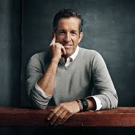

Welcome to Kenneth Cole
Kenneth D. Cole (born March 23, 1954) is an American designer, social activist, business owner, and philanthropist. His global company, Kenneth Cole Productions, creates clothing and other products under the labels Kenneth Cole New York, Reaction Kenneth Cole, and Unlisted, as well as footwear under the label Gentle Souls.Discover our exclusive collection of fashion-forward pieces. From timeless elegance to the latest trends, we offer "birth of shoe company " a range of products designed for those with a taste for quality and style.
Born to a Jewish family in Brooklyn, New York, his father, Charles Cole, owned the El Greco shoe manufacturing company. Cole graduated from John L. Miller Great Neck North High School in 1972. Before learning the family business and starting his own company in 1982, Cole graduated from Emory College of Arts and Sciences of Emory University in 1976.Kenneth Cole Productions, Inc. is an American fashion founded 1982 by Kenneth . Wanting to preview his line